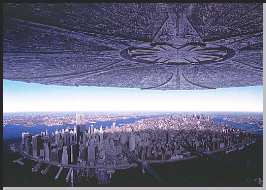

Contents | Features | Reviews | News | Archives | Store |
 |
|
| Movie Credits | Buy It! |
Independence Day
Review by Carrie Gorringe
|  | Directed by Roland Emmerich Starring Bill Pullman, Will Smith, Screenplay by Roland Emmerich |
Independence Day is the 800-pound gorilla of the summer action-filmfest; in less than seven days after its US opening, ID4 pulled in $100m and is closing fast on a $300m box-office total to date. As might be expected, a sequel is already in the planning stages, perhaps for 1998, and other imitations are likely to follow. Pundits in the entertainment industry are falling all over themselves to find an explanation for the film's popularity. Perhaps the best explanation for the success of ID4 is the most simple: it may not be much for the mind, but it most certainly -- alone of all its brethren this summer -- has a great deal of heart.
If you've seen the trailer for ID4, you already know that the film is concerned with that good old standby known as the invasion of the little green men on the second of July. Except that these men are neither little, nor green (and I wouldn't bet the house on their gender, either), and cruise in with spaceships the size of football fields. They are, however, exceedingly nasty. Without attempts at negotiation or prior warning, they begin to settle over major American cities and blow them up.
Being a noble sort at heart, the young and insecure American president, Thomas J. Whitmore (Pullman), tries to prevent everyone from coming apart at the seams. Meanwhile, back in New York, a satellite expert named David Levinson (Goldblum) is able to decipher the intervessel code that the mothership is emitting, and discovers that the aliens are up to - what else? - no good. So he races with his obnoxious father (Hirsch) to Washington, where he presents his findings to the President's chief-of-staff, Constance Spano (Colin), who also happens to be Levinson's rather bitter ex-wife.
The President doesn't like Levinson either, but, after several cities have been barbecued, everyone is willing to listen. All armed forces are placed on alert and one cocky Air Force pilot based in California, Steven Hiller (Smith), vows to "kick ET's butt". Of course, conventional weapons don't work, the President's wife (McDonnell) is in peril, and there's a drunken ex-pilot (Quaid) who is trying to redeem himself for good measure. Throw in some conspiracy-theory stuff about the 1947 sightings of UFOs in Roswell, not to mention the top-secret Air Force base in Nevada known as Area 51, and you have the basic ingredients of ID4.
It could take a while to explain the various cinematic borrowings employed in the plot of ID4, as they encompass a couple of genres and at least that many decades. There's a rather blatant example of theft from Dr. Strangelove, and every other good or bad sci-fi film from the '50s that you can remember (among them, The Day the Earth Stood Still and Invaders from Mars). The narrative trajectory of ID4, steeped in this paranoiac sensibility, comes straight from the 1953 George Pal version of War of the Worlds (except for the fact that Earth will not find salvation this time in the arms of a heaven-sent plague), and is seasoned with a strong overlay of motifs from disaster films of the '70s.
But this unabashed pastiche is not an insult to your intelligence; co-writers Emmerich and Devlin (the team behind the popular-but-vapid Stargate of two years earlier) borrow in a way that is witty and knowing, giving just the right amount of irreverent, yet respectful, tweaking to each element. Underneath it all is a strong sense of old-fashioned patriotism and faith in the system that would not be out of place in a Capra film. Moreover, there's a sincerity in the application of those elements that goes deeper than the surface. ID4, like the best of Capra's work, does not deny that there are problems, but they can all be worked out if we just believe in ourselves and the elemental goodness and rectitude of 'the American way' and work together to keep the system on track.
This theme is seldom made a central part of American films these days, primarily because so doing can render a filmmaker open to the accusation of harboring some sort of conservative wish-fulfillment tendencies. There is no doubt that Capraesque themes can be maudlin and woefully inaccurate. Do such themes make a film any less relevant? Judging from the reactions I heard at a screening of ID4, the answer had to be a resounding "no". There was a real hunger in the audience for what this film had to offer. Cheers accompanied each new victory against the aliens, while audible gasps of pain and disbelief were heard in the audience at the sight of the Statue of Liberty lying, broken and battered, partially submerged after an attack.
Even after making allowances for the jingoistic strains that can exist in certain quarters of American patriotism, it still seemed as if people who had not cheered for anything in years were sloughing off their cynicism, taking this film and running with it. ID4 could easily fall prey to the accusation of being nothing more than a pathetic postmodern attempt to offer up something different to its audience. If it were simply a warmed-over offering of what has come before, then special effects alone would not have been enough to keep the film afloat for over two hours.
Additionally, ID4 is not an advocate for a return to social repression, or, as many academic journals will no doubt depict it, a covert expression of xenophobia, but it does emphasize, in its borrowing from other eras, the need that humans seem to have for mythologies and symbols representing higher objectives than those found in everyday life.
The film's objective - in entertaining the audience, not in averting the alien threat - is ably assisted by performances that give the audience something to cheer for. Goldblum's work as a loopy satellite specialist is paramount and Will Smith is also most engaging and effective. It's no coincidence that when the two come together to perform that vital task that conquers the Martians (or whatever they are), both of them make the film shine.
Pullman's president is somewhat ill-defined for the first half of the film, but the actor warms to the role of hero just in time to save the day (and his role's credibility). Quaid's performance also must be singled out for his touching rendition of a washed-up individual who pulls together what's left of the ragged ends of his life for one last shot at redemption. As Smith's stripper girlfriend who is also, in her own way, looking for redemption, Fox proves to be a dignified and resourceful woman, providing strong evidence that the distaff side of the martial balance sheet is not without representation.
Loggia is appropriately gruff and sensible as the President's military adviser. In a too-brief cameo, Spiner (Data of Star Trek: TNG) is absolutely side-splitting as a scientist who has obviously been sniffing too much formaldehyde in his role of putting your tax dollars to work (look also for cameos by Harry Connick Jr and Harvey Fierstein, although the latter isn't all that inspiring and could even be defined as downright offensive in certain quarters). The only sour note during the proceedings is the stereotypical rendition of the Jewish father-as-yenta from Hirsch; it's the one borrowing from the cinematic past that isn't very effective or very funny, and Hirsch doesn't do much except to accentuate its worst tendencies (in the actor's defense, there's not much that can be done with it). Someone should have stuffed a fresh, chewy bagel into his mouth during reel two, while screaming, "Enough, already!" and then we all could have had some peace while the aliens tried to blow everything up.
ID4 is not without its problems. The film would have benefited from a more judicious use of the scissors at certain points (at two hours and forty-five minutes in length, the first two-thirds of the film are paced somewhat slowly), but the film's finale is worth the wait. At a cost of seventy million dollars, ID4 has also had to make a few adjustments, using matte paintings in lieu of computer-generated effects (perhaps part of its homage to the past?) and very occasionally the difference is noticeable, but the filmmakers have shrewdly placed those visually-awkward moments near the film's end, when any potentially negative side effects are minimized. If you can tolerate the pastiche-styled construction, if you enjoy a game of 'Spot the Movie Reference', or if you want to see a good-old-fashioned film, ID4 is just the ticket.
Contents | Features | Reviews | News | Archives | Store
Copyright © 1999 by Nitrate Productions, Inc. All Rights Reserved.